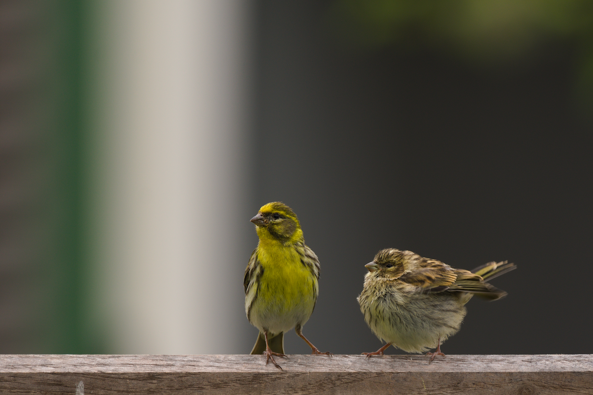

Un petit chanteur jaune des vergers: reconnaître le Serin cini, sa reproduction et son hivernage
Identité et reconnaissance
Le Serin cini Serinus serinus est un très petit fringillidé au corps compact, au bec court relativement épais et à la queue fourchue. Le mâle présente du jaune citron sur la face, la poitrine et le croupion, avec des stries sur le dos et les flancs. La femelle est plus brune et moins jaune; les jeunes lui ressemblent et n’ont pas encore le dessous jaune bien visible. Le croupion jaune apparaît en vol; le chant rapide et continu apporte un indice comportemental utile. Les références arabes l’appellent al-Na’ar al-Urubbi, avec quelques variantes orthographiques.
Espèces proches
Il faut le distinguer du Serin syriaque Serinus syriacus, espèce différente présente au Levant, ainsi que du Tarin des aulnes Spinus spinus. Les stries marquées et le bec très court aident à reconnaître le Serin cini. Le tarin possède un bec relativement plus long et fin, des côtés de queue jaunes et une calotte noire chez le mâle. Les deux serins se ressemblent: examiner ensemble tête, ailes et croupion, puis écouter, vaut mieux que se fier au seul jaune. Un petit oiseau jaune dans les montagnes libanaises n’est pas automatiquement un Serin syriaque.
Milieux, alimentation et comportement
Il utilise jardins, vergers, parcs et lisières, surtout lorsque des arbres de chant et de nidification voisinent avec une végétation herbacée à graines. Son alimentation comprend graines, bourgeons, petites parties végétales et invertébrés. Il peut se nourrir au sol entre les herbes puis revenir dans les arbres. Les populations sont sédentaires, partiellement migratrices ou migratrices, cette dernière stratégie étant plus marquée vers le nord. EURING relie certains déplacements européens à l’Afrique du Nord-Ouest et décrit une migration automnale européenne bien visible en octobre.
Reproduction et cycle annuel
La femelle construit un petit nid compact dans un arbre ou un arbuste, sur une branche extérieure ou à l’abri près du tronc. La ponte habituelle compte trois ou quatre œufs. Le BTO résume l’incubation à environ 11 à 13 jours et le séjour au nid à 13 à 18 jours. Plusieurs nichées sont possibles. Le calendrier varie selon climat et altitude.
Présence et saisons dans le monde arabe
Une étude publiée en 2016 a confirmé sa reproduction à Anjar, au Liban, au printemps 2015 grâce à des observations de nids et de jeunes. La liste libanaise de 2020 décrit un hivernage commun dans les vergers côtiers, les basses collines et la Béqaa, ainsi qu’un passage en octobre et novembre. La synthèse syrienne de 2025 signale une nidification sédentaire à l’ouest et un hivernage en Al-Jazira et dans la région de l’Euphrate. La liste jordanienne confirme l’hivernage, tout en laissant incertaine une éventuelle résidence. Au Maroc, la liste de 2017 indique nicheurs sédentaires et hivernants.
Écologie et conservation
Le statut mondial actuel est Préoccupation mineure; il doit rester distinct de la situation plus sensible du Serin syriaque. Son rôle écologique associe consommation de graines et d’invertébrés dans les réseaux des jardins et vergers. Le désherbage excessif et les herbicides réduisent les plantes nourricières; maintenir une végétation diversifiée près d’arbres convenant aux nids est favorable. Observer à distance et documenter le nourrissage des jeunes constituent des preuves de reproduction plus solides que la seule présence d’un mâle chanteur ou d’un individu isolé au printemps.
Références
AviList — The Global Avian Checklist, v2026
BTO — BirdFacts: Serin
RSPB — Serin
Vogelbescherming Nederland — Europese kanarie
EURING/CMS — Migration Atlas: European Serin
Ramadan-Jaradi, Serhal & Ramadan-Jaradi — First confirmed breeding of the European Serin in Lebanon, Sandgrouse 38, 2016
Ramadan-Jaradi et al. — Updated checklist of the birds of Lebanon, Sandgrouse 42, 2020
Aidek et al. — An Annotated Checklist of the Birds of Syria, 2025
Jordan BirdWatch — Jordan Bird List
Bergier et al. — Liste des oiseaux du Maroc, 2017
Photo : Romzig — CC0-1.0.